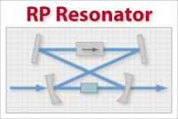
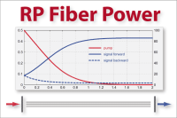
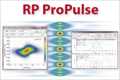
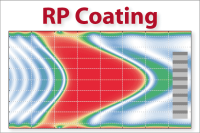

Company profile:
RP Photonics Consulting GmbH

RP Photonics Consulting GmbH
Waldstr. 17
78073 Bad Dürrheim
Germany
| Tel.: | +49 7726 3 89 22 60 |
| Fax: | +49 7726 3 89 22 62 |
| E-mail: | |
| Website: | www.rp-photonics.com |
| Social media: | Facebook, Google+, LinkedIn, YouTube |
Company Description
RP Photonics Consulting GmbH offers
- technical consulting services in technical areas like lasers and amplifiers, nonlinear optics, ultrashort pulses, fiber optics, and noise phenomena
- simulation & design software
- online marketing solutions for the photonics industry worldwide
We enjoy enormous reputation and trust in the photonics community, and we work hard to preserve that treasure!
RP Photonics has the following distributors:
- ASDOPTICS: China
- DPM Photonics: United States
- Kokyo: Japan
- Luen Soft: South Korea
- Western Instruments: India
Products
| Product | Description |
|---|---|
| ABCD matrix (software based on the … algorithm) |  Our RP Resonator software is a highly flexible tool for sophisticated resonator design analysis and optimization – including the sensitivity to misalignment (using ABCDEF matrices) and intracavity beam aberrations. |
| advice on product selection | RP Photonics offers independent advice on product selection. Clarifies your exact needs and compares products in an unbiased way. |
| beam propagation software |  The RP Fiber Power software can simulate beam propagation in optical fibers and other waveguides. Multi-core fibers, helical core fibers, fiber couplers and the like can also be investigated. |
| design and development services | RP Photonics can work out prototype and product designs for laser technology and related areas. |
| feasibility studies | RP Photonics helps finding out whether new ideas are worth some investment of time and money. That way, you can greatly reduce the risks associated with new development projects. |
| fiber simulation software |  RP Fiber Power simulation software for designing fiber devices: fiber amplifiers, fiber lasers, ASE sources, fiber-optic data links, and passive devices such as multi-core fibers, tapered fibers and fiber couplers. For simpler purposes, there is the free fiber optics software RP Fiber Calculator. |
| laser design (… services) | We offer prototype and product design services, based on detailed experience and specialized software for designing all kinds of solid-state lasers. |
| laser development (… services) | We offer prototype and product design services, based on detailed experience and specialized simulation software for designing all kinds of solid-state lasers. |
| laser modeling (… services and software) | We have powerful simulation software for modeling various aspects of solid-state lasers, particularly fiber lasers. Also, we offer technical consulting services. |
| laser simulation software | We offer various simulation software packages for designing fiber devices and laser resonators, for example RP Resonator for laser resonator design and RP Fiber Power for fiber laser and amplifier design. |
| marketing in photonics | RP Photonics offers high-value solutions for online marketing in photonics. It has the best of all photonics buyer's guides – very popular and bringing a lot of traffic to our advertisers! We can also offer advertising banners and special promotions for announcing conferences, webinars etc. – perfectly targeted by presenting that in encyclopedia articles on directly related topics. See also our articles on photonics marketing! |
| nonlinear frequency conversion (equipment for …) | We offer advice on all aspects of nonlinear frequency conversion, e.g. the design of frequency conversion devices, choice of nonlinear materials, simulation of nonlinear conversion. Also: specialized in-house training courses, tailored to your needs. |
| nonlinear optics software | The RP Fiber Power software can simulate supercontinuum generation in optical fibers. Moreover, RP Photonics has various nonlinear optics software tools for use in consultancy. Example: systematic calculation of all phase-matching configurations in a nonlinear crystal. |
| optical design software | We offer various simulation software packages for designing fiber devices and laser resonators: for example RP Fiber Power, RP Resonator, RP ProPulse. |
| patent development | RP Photonics offers competent help in patent writing and analysis. We team up with your patent attorney in order to make sure that technical and legal aspects are perfectly covered. |
| pulse propagation modeling (… software) |  Our RP ProPulse and RP Fiber Power software is suitable for modeling mode-locked solid-state lasers and fiber lasers, ultrafast amplifier systems etc. |
| research and development | RP Photonics supports both research institutes and companies with scientific research and product development. |
| resonator design (software and services for …) |  Our RP Resonator software is a particularly flexible tool for sophisticated resonator design analysis and optimization – including the sensitivity to misalignment and intracavity beam aberrations. |
| technical writing | We offer technical writing services e.g. for catalogs, brochures, data sheets, web pages, user manuals, research proposals and grant applications. |
| thin-film design software |  The the powerful RP Coating thin-film design software can be used for analyzing and optimizing optical thin-film multilayer coatings. |
| training on fiber lasers and amplifiers | We offer in-house staff training courses on various topics in the area of fiber-optic technology – tailored to your needs. Boost the competence and productivity of your team within just a few days! |
| training on fiber optics | We offer in-house staff training courses on various topics in the area of fiber-optic technology – tailored to your needs. Boost the competence and productivity of your team within just a few days! |
| training on laser beams | We offer in-house staff training courses on various topics in the area of laser beams and beam quality – tailored to your needs. Boost the competence and productivity of your team within just a few days! |
| training on laser technology | We offer in-house staff training courses on various topics in the area of laser technology – tailored to your needs. Boost the competence and productivity of your team within just a few days! |
| training on nonlinear optics | in-house staff training courses on nonlinear frequency conversion and other topics in nonlinear optics – tailored to your needs |
| training on optical technology | We offer in-house staff training courses on various topics in the area of nonlinear optics – tailored to your needs. Boost the competence and productivity of your team within just a few days! |
| training on photodetection | We offer in-house staff training courses on various topics in the area of photodetection – tailored to your needs. Boost the competence and productivity of your team within just a few days! |
| training on specialized topics in photonics | We offer in-house staff training courses on many topics in the area of photonics – tailored to your needs. Boost the competence and productivity of your team within just a few days! |
| trouble shooting technical problems | RP Photonics helps to identify technical problems and to work out practical solutions. |
| websites on photonics and laser technology |  The RP Photonics website hosts the famous Encyclopedia of Laser Physics and Technology and the RP Photonics Buyer's Guide. It is the leading online information source worldwide – comprehensive and reliable, thus highly respected by thousands of experts. |
Information of RP Photonics Appears on the Following Pages
Company profile (this page)
Pages with Suppliers for Products
ABCD matrix, advice on product selection, beam propagation software, design and development services, feasibility studies, fiber simulation software, laser design, laser development, laser modeling, laser simulation software, marketing in photonics, nonlinear frequency conversion, nonlinear optics software, optical design software, patent development, pulse propagation modeling, research and development, resonator design, technical writing, thin-film design software, training on fiber lasers and amplifiers, training on fiber optics, training on laser beams, training on laser technology, training on nonlinear optics, training on optical technology, training on photodetection, training on specialized topics in photonics, trouble shooting technical problems, websites on photonics and laser technology
Encyclopedia Articles
ABCD matrix, fiber simulation software, laser design, laser development, laser modeling, nonlinear frequency conversion, pulse propagation modeling, resonator design
Profiles of Other Suppliers
RP Photonics is shown as alternative supplier on 89 pages of other suppliers not having an ad package.
Other Pages
On various pages, a banner can randomly show up which displays a random selection of logos of suppliers with an ad package.